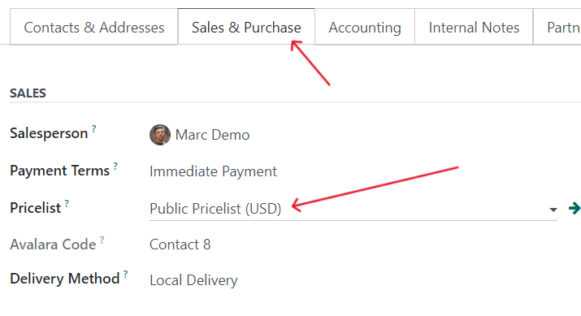
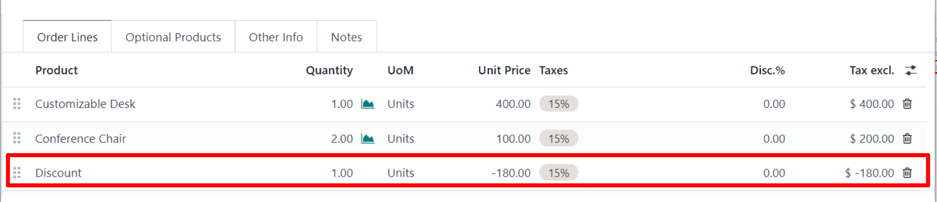
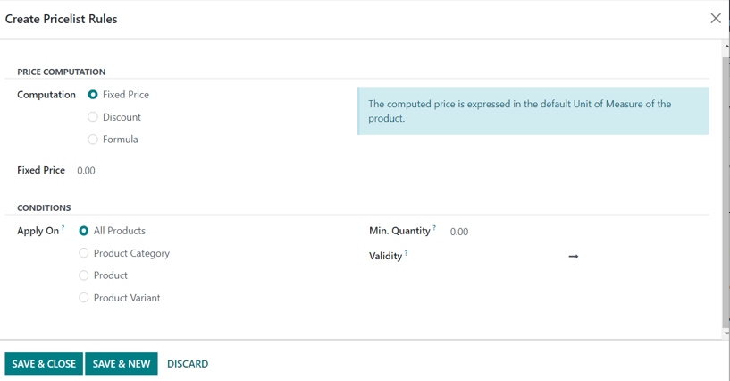

Pricelists, discounts, and formulas¶
Odoo Sales has a useful pricelist feature that can be tailored to fit any unique pricing strategy.
A pricelist is a list of prices (or price rules) that Odoo uses to determine the appropriate price for a customer. These pricelists can be set with specific criteria (such as time periods, minimum quantity sold, and more) in order to apply certain prices or discounts.
Pricelists suggest certain prices, but they can always be overridden on the sales order.
Pricing strategy options¶
To choose a pricing strategy, first navigate to . In the Pricing section, click the checkbox next to the Pricelists feature.
Doing so reveals two additional options beneath it: Multiple prices per product and Advanced price rules (discounts, formulas). A link labeled Pricelists also appears, which leads to a separate pricelists page, wherein pricelists can be created and/or modified.
Multiple prices per product: provides the option to set several different prices per product.
Advanced price rules (discounts, formulas): provides the option to create detailed price rules and apply discounts, margins, and roundings.
After clicking the checkbox beside the Pricelists feature, select one of those two options, then click Save to save all changes.
Pricelists¶
After activating and saving the Pricelists feature, the Settings page reloads and, from here, either select the Pricelists link (beneath the Pricelists feature on the Settings page), or navigate to .
Either option reveals the Pricelists page, in which pricelists can be created and/or modified at any time.

Important
The order of the pricelists on the Pricelists page has an impact on how they are applied. If several pricelists share the same criteria, only the first listed pricelist is applied.
For example, for two pricelists with different rules, but same criteria (e.g., same website, same country), only the first pricelist in the list is applied.
Note
The Public Pricelist is the default pricelist used with Odoo Sales and eCommerce. This pricelist is applied by default, if there are no matching criteria.
Note
In Odoo 17 (and above), it is no longer required to have a pricelist entered in the Pricelist field on a quotation form in order to confirm it (i.e. turn it into a sales order).
It should also be noted that, in Odoo 17 (and above), a chatter section can be found on pricelist forms, which enhances the ability to communicate about them.
From the Pricelists page, either select the desired pricelist to edit, or click New to create a new pricelist, which reveals a blank pricelist form that can be configured in a number of different ways.

When creating a new pricelist, start by adding a name for the pricelist at the top of the form, in the blank field. Next, select which Currency should be used.
Then, if working in a multi-company environment, select which company this pricelist should apply to in the Company field. If this field is left blank, the pricelist is automatically applied to all companies in the database.
Price Rules tab¶
The Price Rules tab functionality on a pricelist form varies depending on the Pricelists setting chosen: either Multiple prices per product or Advanced price rules (discounts, formulas).
However, the Time-based rules tab and Configuration tab are always the same, regardless of the chosen Pricelists setting.
Multiple prices per product¶
With the Multiple prices per product setting activated, the Price Rules tab on pricelist forms provides the option to add specific products, with a specific price, to a pricelist.
To add a specific product and price to a pricelist form, click the Price Rules tab, then click Add a line in the Products column. Then, select the desired product for which a specific price should be applied.
Next, if necessary, select a product variant under the Variants column (e.g. a specific product size, color, etc.). If no variants are selected, then this price will apply to all variants of the product.
If a minimum amount of the product must be purchased in order to apply the specific price, enter the amount under the Min. Quantity column.
To configure the price of the product for this specific pricelist, enter the desired amount under the Price column. Then, there is the option to add a Start Date and End Date to the configured product price, if desired.
To add another product line, click Add a line again, and repeat the process. There is no limit to how many products can be added in the Price Rules tab of a pricelist form.
For more information, check out the following section: Multiple prices per product.
Advanced price rules¶
With the Advanced price rules (discounts, formulas) setting activated, the Price Rules tab on pricelist forms provides the option to configure detailed price rules based on formulas.
Check out the Advanced price rules (discounts, formulas) section for detailed steps on how to add advanced price rules to a pricelist.
Recurring Prices tab¶
Recurring prices are specifically used with subscription products.
Under the Recurring Prices tab, the same functionality of the Price Rules tab is present. The only difference being that a recurring time period can be applied in the Recurring Plan column.
Once Products and/or Product Variants are selected, click Add a
price rule, and select the blank field in the Recurring Plan column to reveal a
drop-down menu of pre-designated recurrence periods (e.g. Monthly, Quarterly, Weekly, etc.).
New recurrence periods can also be created from this column. To do so, type in the name for the new Recurring Plan, then select Create from the resulting drop-down menu to create the time period, which can be edited later.
Or, select Create and edit… to reveal a Create Recurring Plan pop-up form. From this pop-up form, the new recurrence period can be configured, with specific Details, Self-Service, and Pricing options. When the configurations are complete, click the Save & Close button.

Lastly, add the desired price for this recurring price rule in the Recurring Price column.
See also
../../../subscriptions
Rental rules tab¶
Under the Rental rules tab, specific price rules can be configured for various rental products, using the same methodology as the Price Rules and Recurring Prices tabs.
To add a rental rule, click Add a line, and select a desired product in the Products column. Then, select any specific Variants, if necessary.
Next, designate a Period of time for the rental rule (e.g. Daily, Hourly, etc.).
Lastly, configure a Price for the rental rule in the respective column.
Configuration tab¶
Under the Configuration tab, there are a few options that can further customize the pricelist.

From here, under the Availability section, in the Country Groups field, certain country groups can be added to the pricelist. There is no limit to how many country groups can be added in this field.
Note
If no country is set for a customer, Odoo takes the first pricelist without any country group.
Under the Website section, there are a few options that can be configured. In the Website field, this pricelist can be applied to a specific website, if working in a multi-website environment. If left blank, the pricelist is applied to all websites in the database.
Tick the Selectable checkbox to have this pricelist as a selectable option for customers to choose as they shop. If the Selectable box is left unticked, customers cannot select this pricelist for themselves.
Lastly, there is the option to add an E-commerce Promotional Code. To add a code, type in the desired promo code that, when entered during the checkout process, applies the pricelist to the customer, even if the customer does not fall into the previously-specified criteria.
Then, in the Discounts section, there is a Discount Policy field with two options to choose from: Discount included in the price or Show public price & discount to the customer.
If Discount included in the price is selected, the price shown to the customer already accounts for the discount being applied. However, if Show public price & discount to the customer is selected, the customer sees the actual public price and how much they are saving with this pricelist discount.
Customer pricelist application¶
While the default pricelist applied to any customer is the Public Pricelist, Odoo provides the opportunity to directly apply a different pricelist to customers on their contact form.
To do that, open the desired customer’s contact form, either by navigating to and selecting the customer from the main Customers page, or by clicking on the customer’s name on a sales order.

On the desired customer’s contact form, under the Sales & Purchase tab, in the Sales section, designate what pricelist should be applied to this specific customer from the drop-down menu in the Pricelist field.
Note
When a customer is added to the database, the default pricelist is automatically applied to them. There is no way to have a blank Pricelist field on a contact form. Even if that field is left blank, the default pricelist appears when that contact form is opened again.
However, when that contact is added to a quotation, and the Pricelist field is auto-populated (based on the information from their contact form), that predetermined pricelist can be removed from the Pricelist field, and the quotation can still be confirmed, and subsequently, turned into a sales order.
Multiple prices per product¶
To apply several prices per individual product, select the Multiple prices per product option, after enabling the Pricelists feature on the Sales app setting page (), and click Save.
Next, apply pricelists to specific products using the product form. Navigate to the and select the product for which multiple prices should be applied. Selecting a product from the Products page reveals that specific product’s product form on a separate page.
On the product form, click the Extra Prices smart button, located at the top of the form.

Doing so reveals a separate page displaying the Price Rules that are specific to that particular product. Here, price rules can be edited or created at any time.

To create a new price rule for a product from this specific Price Rules page, click New to add a new, customizable row that has the desired product already populated in the Applied On column.
Next, select which Pricelist this specific product price rule should apply to, via the drop-down menu in the Pricelist column.
Note
The Public Pricelist is the default pricelist used with Odoo Sales and eCommerce.
Tip
To create a new pricelist from this page, type in the desired name of the new pricelist in the Pricelist column, then select Create from the drop-down menu. All pricelists can be modified at any time, by navigating to . Pricelists can also be created on that specific Pricelists page, as well.
After the desired pricelist is added to the row, designate a Min. Quantity for the price rule.
Example
If the Min. Quantity column is set to 2, the new price in the Price
column will be applied to orders of 2 or more products. So, in theory, if a single product costs
$100, customers can be encouraged to buy more, if the Price is set at $85 per product
for a Min. Quantity of 2 products.
Next, enter the desired amount in the Price column. Then, if needed, enter a Start Date and End Date for the product’s price rule.
And lastly, if working in a multi-company environment, select which company this price rule should be applied to in the Company field. Leaving this field blank means the price rule applies for all companies in the database.
Click away from the row to activate Odoo’s auto-save capability, meaning that newly-created price rule is now ready to be used.
Proceed to add as many unique price rules per product as desired. There is no limit to how many price rules can be added per product.
With the price rule(s) in place for a specific product, customers who fall into those corresponding pricelists automatically see those new prices applied. The number of price rules applied to a particular product are also displayed in the Extra Prices smart button, located on every product form.
Note
When a price rule/pricelist is added to a product via the Extra Prices smart button, it is also reflected on the pricelist itself. Similarly, when a price rule for a specific product is added to a pricelist, it is also reflected on the product form via the Extra Prices smart button.
Discounts¶
The Discounts feature allows the ability to set a discount or increase the price on individual items in a sales order. This is calculated as a percentage of that product’s sales price.
To access discounts, navigate to the Sales app setting page (), and click the Discounts checkbox, then click Save.
After the setting has been activated, navigate to the desired quotation by going to at the top of the page. Once there, click on the desired quote from the list.
In the order lines section of the quotation form, a new column heading will appear labeled Disc.%. This column is used to set discounts on individual line items. Enter the desired discount for each product line and the new price will automatically be calculated in the quote Total at the bottom of the page.
Tip
A discount can also be added directly to a sales order in the same way. Navigate to , click on the desired sales order, and add the discount to Disc.% as described above.

Tip
Positive values for Disc.% will apply a discount, while negative values can be used to increase the price.
Discount button¶
In Odoo 17, with the Discounts setting enabled, a Discount button appears at the bottom of sales orders.

When the Discount button on a sales order is clicked, a Discount pop-up window appears.
On this pop-up window, configure the Discount percentage, and select one of the following discount options: On All Order Lines, Global Discount, or Fixed Amount.
On All Order Lines: When selected, Odoo provides the ability to add the specified discount percentage (configured in the Discount field of the pop-up window) on all existing order lines of the sales order.
Global Discount: When selected, Odoo adds a discount product to the order, which has the cumulative value equivalent to the specified discount percentage (configured in the Discount field of the pop-up window). Any product added (or removed) after the discount is added does not affect the discount value on the order line.
Example
In this example, since the total of the order is $600, and there is a 30% global discount, that specific line is added to the sales order with a -180 value (which is 30% of $600).
Fixed Amount: When selected, the percentage designation in the Discount field turns to a monetary value (e.g. dollars), wherein a specific amount must be entered. This configured value is added as a discount line on the sales order.
Note
It is more beneficial to add a Fixed Amount discount after all desired products have been added to a sales order. If there are changes made to the sales order after the discount is added, make sure to change the value on the Discount line, or remove the line and add the discount again.
Advanced price rules¶
The Advanced price rules (discounts, formulas) pricelist feature provides the option to set price change rules based on discounts and formulas. These changes can be relative to the product list/catalog price, the product’s cost, or another pricelist.
To use advanced pricing rules, with discounts and formulas, select the Advanced price rules (discounts, formulas) option, after enabling the Pricelists feature on the Sales app setting page (), and click Save.
After activating and saving that Pricelists feature, the Settings page reloads and, from here, either select the Pricelists link (beneath the Pricelists feature on the Settings page), or navigate to .
Either option reveals the Pricelists page, in which pricelists can be created and/or modified at any time.
From the Pricelists page, select a desired pricelist to modify, or create a new pricelist by clicking the New button.
On the pricelist form, under the Price Rules tab, click Add a line to add an advanced price rule. Doing so reveals a Create Pricelist Rules pop-up form, in which the advanced rule is configured.
Price computation¶
On this form, first choose one of the three Computation options:
Fixed Price: the price computation is based on a fixed price.
Discount: the price computation is based on a discount.
Formula: the price computation is based on a formula.
Note
Each Computation option reveals its own computation-specific fields on the form.
If Fixed Price is selected, enter the desired price in the Fixed Price field below. If Discount is selected, enter the desired discount percentage in the Discount field that appears.
If Formula is selected, a number of configurable options appear.

To configure the Formula computation option, start by selecting an option from the Based on field: Sales Price, Cost, or Other Pricelist. This determines what the advanced price rule formula will be based on.
Next, in the Discount field, determine how much of a discount should be applied. It should be noted that a mark-up can be applied by setting a negative discount in this field.
Example
To formulate a 100% markup (or 2 times the cost of the product), with a $5 minimum margin, set
the Based on field to Cost, the Discount to -100, and the
Margins to 5. This is often seen in retail situations.
Then, in the Extra Fee field, specify a fixed amount to add (or subtract) to the amount calculated with the discount. After that, enter a desired figure in the Rounding Method field. The rounding method sets the price so that it is a multiple of the value in the field.
Note
Rounding is applied after the discount and before the surcharge.
Tip
To have prices that end in 9.99, set the Rounding Method to 10 and the
Extra Fee to -0.01.
Lastly, specify the minimum amount of margin over the base price in the Margins field.
Once all formula-related configurations are complete, Odoo provides an example of the formula in a blue block to the right of the configurations.
Example
To apply 20% discounts, with prices rounded up to 9.99, set the Based on field to
Sales Price, the Discount field to 20, the Extra Fee field
to -0.01, and the Rounding Method field to 10.
Conditions¶
At the bottom of the Create Pricelist Rules pop-up form is the Conditions section.
Here, start by selecting one of the options in the Apply On field:
All Products: the advanced pricelist rule will be applied to all products.
Product Category: the advanced pricelist rule will be applied to a specific category of products.
Product: the advanced pricelist rule will be applied to a specific product.
Product Variant: the advanced pricelist rule will be applied to a specific product variant.
If any of those options, apart from All Products, are selected, a new option-specific field appears, in which the specific Product Category, Product, or Product Variant must be chosen.
Then, select a minimum quantity to be applied to the advanced pricelist rule in the Min. Quantity field. Lastly, select a range of dates for the pricelist item validation in the Validity field.
Once all configurations are complete, either click Save & Close to save the advanced pricelist rule, or click Save & New to immediately create another advanced pricelist rule on a fresh form.
Note
If a price rule is set for a particular product, and another one for its product category, Odoo takes the rule of the product itself.
See also
/applications/websites/ecommerce/products/price_management